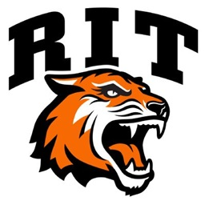
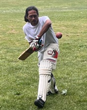
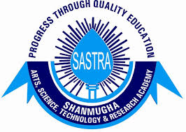
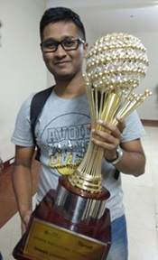

Rochester Institute of Technology

Master of Science in Cybersecurity
August 2021 to May 2024 | Rochester, New York, USA
Courses Taken:
- Cryptography and Authentication
- Computer System Security
- Network Security
- Advanced Computer Forensics
- Malware Reverse Engineering
- Information Security Policy & Law
- Information Security Risk Management
- Covert Communications
Projects:
| Project Name | Course | Domain(s) | Timeline |
|---|---|
| Blank spaces to Encoded verses: sanskrit's illicit affairs with cryptography | Graduate Capstone Project | Cryptography, Linguistics, Software Developemnt, Research | August 2023 to May 2024 |
| SINES Framework | Advanced Computer Forensics | Incident Response, Software Development, Research | August 2022 to December 2022 |
| Covert Channels in Cryptic Crossword Puzzles | Covert Communications | Covert Channels, Cryptic Crosswords, Research | August 2022 to December 2022 |
| Cryptanalysis Using Fluid Intillegence - Decrypting Cryptic Crosswords | Cryptography and Authentication | Cryptography, Cryptic Crosswords, Research | August 2021 to December 2021 |

Competitions and Extracurricular
- Vice-Captain of RIT's Cricket Team | May 2022 to May 2024
- Treasurer of RIT Cricket Club | August 2022 to May 2024
- Finalist in 2022 Hack3D Capture The Flag conducted by New York University
SASTRA Deemed University

Bachelor of Technology in Electronics and Communication Engineering
July 2015 to August 2019 | Thanjavur, Tamilnadu, India
Awards:
- Recipient of the esteemed Shri H Mahadeva Iyer Award for Academic Excellence, Extra-Curricular Activities and Extensive reading.
Projects:
| Project Name | Course | Domain(s) | Timeline |
|---|---|
| Windows Misconfiguration Management Module | Final Project (Done in Zoho) | Cybersecurity, Windows Security, Visual C++, Software Developemnt | December 2018 to April 2019 |
| Automated Piano Tiles Player using Arduino | Mini Project | Ardunio, Microcontroller Programming, Software Developemnt | July 2018 to November 2018 |
| Digital alarm clock using Arduino | Microcontrollers | Ardunio, Microcontroller Programming, Software Developemnt | August 2022 to December 2022 |

Competitions, Conferences and Extracurricular
- Organized the International Conference on Communication and Security | March 2017
- Core Committee Member of Kuruksastra - SASTRA's annual national cultural fest | June 2018 to May 2019
- Led the University contingent to overall victories in 5 intercollegiate cultural fests.
- Head of Kuruksastra Finance Team | June 2018 to May 2019